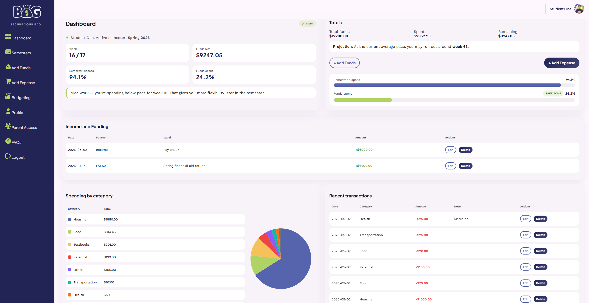
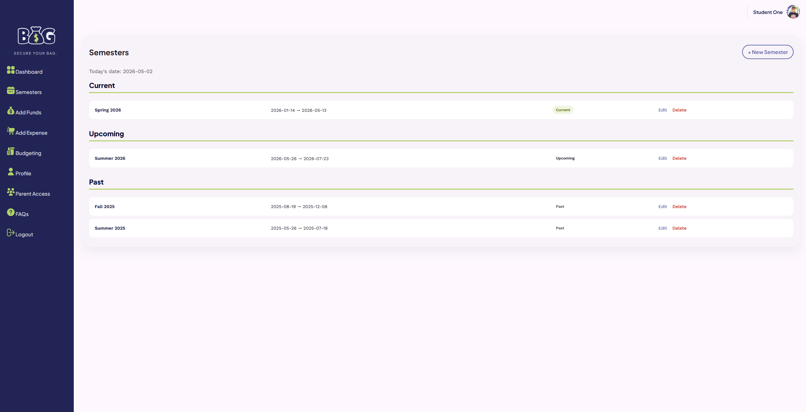
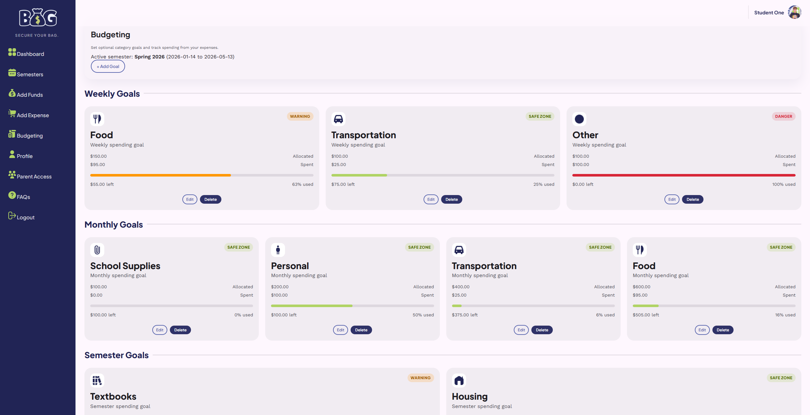
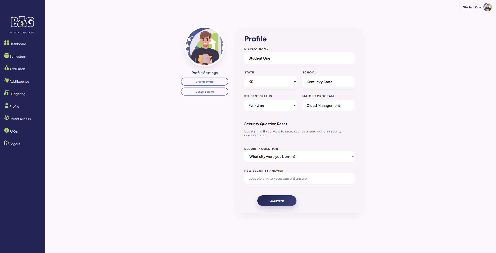

Main Dashboard Overview

The dashboard gives students a clear overview of their balance, semester progress, quick actions, and recent activity.
Explore real screens from BAG, including the dashboard, semester setup, budgeting tools, and profile page.

The dashboard gives students a clear overview of their balance, semester progress, quick actions, and recent activity.

Students can create and manage academic terms so their budget stays connected to a specific semester.

The budgeting page helps students track goals, categories, and spending habits throughout the semester.

The profile page lets students personalize their account and manage important student details.